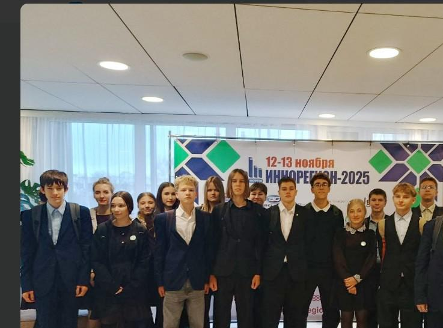
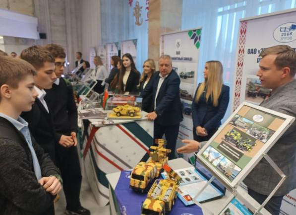
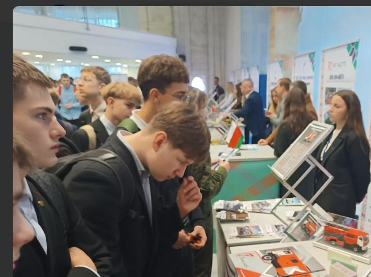
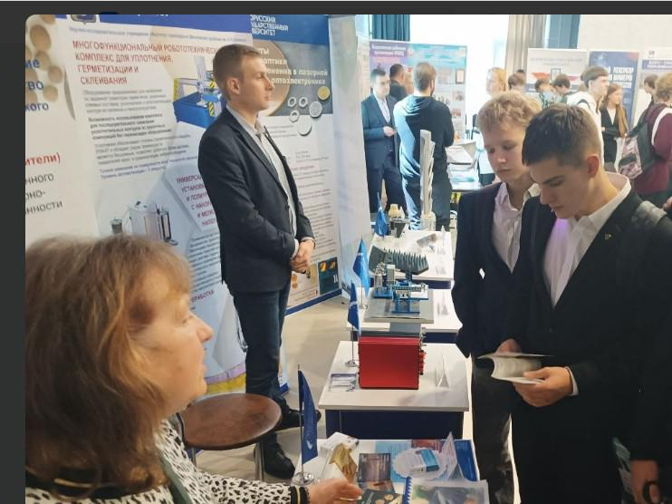

ГИМНАЗИСТЫ СТАЛИ УЧАСТНИКАМИ ФОРУМА «ИННОРЕГИОН-2025»
12 ноября учащиеся 9 «Г» класса Государственного учреждения образования «Гимназия №1 г. Борисова» стали участниками форума «ИННОРЕГИОН-2025», который состоялся во Дворце культуры им. М. Горького. Организатором выступил Борисовский государственный технический колледж.
Одна из целей мероприятия заключалась в том, чтобы вдохновить молодежь на получение качественного образования и мотивировать желание на дальнейшую работу на предприятиях своего района, а также формировать чувство гордости за инновационные достижения страны.

О масштабности форума свидетельствует тот факт, что в нем приняли участие представители 30 организаций и восьми ведущих ВУЗов страны.

В ходе мероприятия гимназисты имели возможность познакомиться с инновациями и продукцией, представленной различными субъектами инновационной структуры, включая технопарки и крупные предприятия г. Борисова, пообщаться с представителями высших учебных заведений по вопросам поступления, перспективам дальнейшей работы, инновационных разработок.

По итогам участия в форуме нашему учреждению образования был вручен сертификат участника форума «ИННОРЕГИОН-2025».
